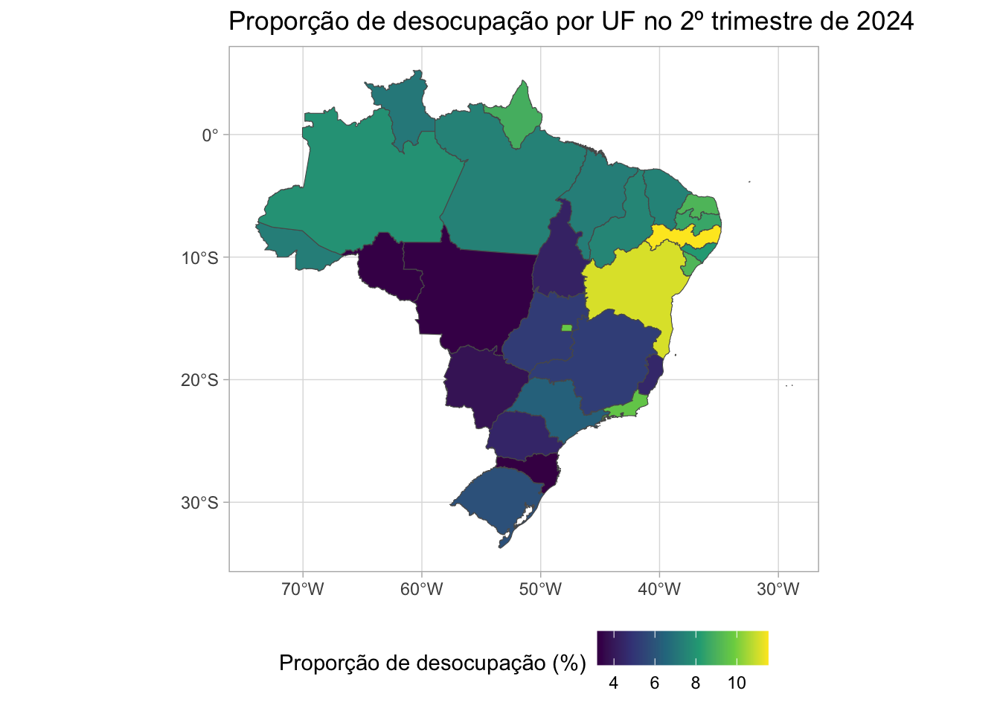

library(tidyverse)
dados_brutos <- read_rds("dados/sidrar_4092_bruto.rds") Transformando dados
Introdução
Primeiramente, precisamos carregar o pacote tidyverse e a base de dados que vamos utilizar. A base de dados é a tabela 4092 do SIDRA, que apresenta dados sobre “pessoas de 14 anos ou mais de idade por condição em relação à força de trabalho e condição de ocupação”1, e foi baixada previamente (em Importando dados).
Padronizar nome das colunas
É uma boa prática padronizar o nome das colunas de um data frame. Assim evitamos problemas de codificação de caracteres (encoding), facilitamos a legibilidade do código e evitamos possíveis erros ao acessar as colunas.
O pacote janitor possui a função clean_names(), que padroniza os nomes das colunas de um data frame. Ele substitui espaços por underline (_), remove caracteres especiais, e transforma o texto em minúsculo, garantindo maior consistência ao lidar com os dados. Isso evita erros ao acessar colunas.
library(janitor)# checar nome das colunas da base de dados
names(dados_brutos) [1] "Nível Territorial (Código)"
[2] "Nível Territorial"
[3] "Unidade de Medida (Código)"
[4] "Unidade de Medida"
[5] "Valor"
[6] "Unidade da Federação (Código)"
[7] "Unidade da Federação"
[8] "Trimestre (Código)"
[9] "Trimestre"
[10] "Variável (Código)"
[11] "Variável"
[12] "Condição em relação à força de trabalho e condição de ocupação (Código)"
[13] "Condição em relação à força de trabalho e condição de ocupação" # limpar nomes das colunas da base de dados, e salvar em um novo objeto
dados_renomeados <- clean_names(dados_brutos)
# checar nome das colunas da base de dados renomeada
names(dados_renomeados) [1] "nivel_territorial_codigo"
[2] "nivel_territorial"
[3] "unidade_de_medida_codigo"
[4] "unidade_de_medida"
[5] "valor"
[6] "unidade_da_federacao_codigo"
[7] "unidade_da_federacao"
[8] "trimestre_codigo"
[9] "trimestre"
[10] "variavel_codigo"
[11] "variavel"
[12] "condicao_em_relacao_a_forca_de_trabalho_e_condicao_de_ocupacao_codigo"
[13] "condicao_em_relacao_a_forca_de_trabalho_e_condicao_de_ocupacao" Linhas, colunas e objetivo de análise
Uma pergunta que é sempre importante ter em mente ao analisar dados é: O que cada linha representa? Na estatística, esse é o conceito da unidade amostral, ou unidade observacional.
O objeto dados_brutos apresenta uma linha para cada combinação das seguintes variáveis:
Trimestre (Código)/TrimestreUnidade da Federação/Unidade da Federação (Código)Variável/Variável (Código)Condição em relação à força de trabalho e condição de ocupaçãoeCondição em relação à força de trabalho e condição de ocupação (Código)
Podemos consultar os valores distintos possíveis no R, para garantir que estamos selecionando corretamente os valores de interesse.
As variáveis disponíveis na base de dados, e suas unidades de medida são:
distinct(
# base de dados
dados_renomeados,
# colunas que queremos bucar os valores distintos
variavel, unidade_de_medida
) variavel
1 Pessoas de 14 anos ou mais de idade
2 Coeficiente de variação - Pessoas de 14 anos ou mais de idade
3 Distribuição percentual das pessoas de 14 anos ou mais de idade
4 Coeficiente de variação - Distribuição percentual das pessoas de 14 anos ou mais de idade
unidade_de_medida
1 Mil pessoas
2 %
3 %
4 %Podemos observar, cada linha representa uma combinação de trimestre, unidade da federação e variável.
Outras perguntas relevantes ao analisar dados são:
- Qual é a pergunta que eu quero responder com esses dados?
- Quais são as variáveis que eu preciso para responder essa pergunta?
Neste capítulo, vamos explorar as funções de transformação de dados do pacote dplyr, a partir da pergunta norteadora abaixo:
Considerando que a tabela 4092 apresenta dados sobre “pessoas de 14 anos ou mais de idade por condição em relação à força de trabalho e condição de ocupação”, qual é a taxa de desocupação de cada estado e região do Brasil ao longo do tempo?
Pipe - Encadeando funções
Nos exemplos anteriores, utilizamos uma função por vez, para facilitar a compreensão de cada etapa. No entanto, à medida que nos familiarizamos com as funções, podemos encadear várias delas em um único fluxo de código usando o operador pipe (%>% ou |>). Isso torna o código mais conciso e elimina a criação de objetos intermediários desnecessários.
Porém, é importante ter cuidado para não criar sequências muito longas e difíceis de entender.
Filtrando linhas
Para responder à pergunta norteadora, não precisamos de todas as variáveis presentes na base de dados. Podemos filtrar as linhas que são relevantes para a análise, escolhendo as variáveis de interesse.
Nesse caso, podemos filtrar os dados onde a variável é igual à "Pessoas de 14 anos ou mais de idade".
dados_filtrados <- filter(
# base de dados
dados_renomeados,
# condição de filtro
variavel == "Pessoas de 14 anos ou mais de idade"
)Para verificar se o filtro foi feito corretamente, podemos checar o número de linhas de cada base de dados:
nrow(dados_renomeados)[1] 27000nrow(dados_filtrados)[1] 6750Podemos verificar também os valores distintos para as colunas variavel e unidade_de_medida na base de dados dados_filtrados:
distinct(
# base de dados
dados_filtrados,
# colunas que queremos bucar os valores distintos
variavel, unidade_de_medida
) variavel unidade_de_medida
1 Pessoas de 14 anos ou mais de idade Mil pessoasAgora sabemos que a base de dados dados_filtrados contém apenas dados sobre a variável "Pessoas de 14 anos ou mais de idade", e que a unidade de medida da coluna valor é mil pessoas.
Várias formas de filtrar as linhas
Como citamos anteriormente, em algumas situações existem várias formas diferentes de realizar uma tarefa.
No caso da função filter(), podemos utilizar diferentes operadores lógicos ou funções auxiliares para fazer filtros.
Os exemplos abaixo podem ser úteis para consulta futura!
Para esses exemplos, vamos utilizar a tabela starwars do pacote dplyr. Nessa tabela, cada linha representa um personagem de Star Wars, e as colunas representam diferentes características desses personagens.
Exemplos de operadores lógicos:
| Operador | Descrição | Exemplo | Interpretação |
|---|---|---|---|
== |
Igual à | species == "Human" |
Todas as linhas cuja espécie é “Human” |
!= |
Diferente de | species != "Human" |
Todas as linhas cuja espécie não é “Human” |
> |
Maior que | height > 180 |
Todas as linhas cuja altura é maior que 180 |
>= |
Maior ou igual a | height >= 180 |
Todas as linhas cuja altura é maior ou igual a 180 |
< |
Menor que | height < 180 |
Todas as linhas cuja altura é menor que 180 |
<= |
Menor ou igual a | height <= 180 |
Todas as linhas cuja altura é menor ou igual a 180 |
%in% |
Está em um conjunto | species %in% c("Human", "Droid") |
Todas as linhas cuja espécie é “Human” ou “Droid” |
! |
Negação | !is.na(height) |
Todas as linhas cuja altura não é NA |
! e %in% |
Negação de um conjunto | !(species %in% c("Human", "Droid")) |
Todas as linhas cuja espécie não é “Human” ou “Droid” |
Exemplos de funções auxiliares:
| Função | Descrição | Exemplo | Interpretação |
|---|---|---|---|
str_detect() |
Detecta padrões em textos | str_detect(name, "Skywalker") |
Todas as linhas cujo nome contém “Skywalker” |
str_starts() |
Detecta padrões no início de textos | str_starts(name, "Luke") |
Todas as linhas cujo nome começa com “Luke” |
str_ends() |
Detecta padrões no final de textos | str_ends(name, "Vader") |
Todas as linhas cujo nome termina com “Vader” |
Selecionando colunas
Algumas colunas não são relevantes para responder à pergunta norteadora. Podemos selecionar apenas as colunas que vamos utilizar através da função select():
dados_selecionados <- select(
# base de dados
dados_filtrados,
# colunas que queremos manter
unidade_da_federacao,
unidade_da_federacao_codigo,
trimestre,
trimestre_codigo,
condicao_em_relacao_a_forca_de_trabalho_e_condicao_de_ocupacao,
valor
)
glimpse(dados_selecionados)Rows: 6,750
Columns: 6
$ unidade_da_federacao <chr> "Rondôn…
$ unidade_da_federacao_codigo <chr> "11", "…
$ trimestre <chr> "1º tri…
$ trimestre_codigo <chr> "201201…
$ condicao_em_relacao_a_forca_de_trabalho_e_condicao_de_ocupacao <chr> "Total"…
$ valor <dbl> 1210, 7…Podemos renomear colunas com a função rename(). Vamos renomear algumas colunas para facilitar o uso posteriormente:
dados_renomeados_2 <- rename(
# base de dados
dados_selecionados,
# colunas que queremos renomear: novo_nome = nome_atual
condicao = condicao_em_relacao_a_forca_de_trabalho_e_condicao_de_ocupacao,
valor_mil_pessoas = valor,
uf = unidade_da_federacao,
uf_codigo = unidade_da_federacao_codigo
)
glimpse(dados_renomeados_2)Rows: 6,750
Columns: 6
$ uf <chr> "Rondônia", "Rondônia", "Rondônia", "Rondônia", "Ron…
$ uf_codigo <chr> "11", "11", "11", "11", "11", "11", "11", "11", "11"…
$ trimestre <chr> "1º trimestre 2012", "1º trimestre 2012", "1º trimes…
$ trimestre_codigo <chr> "201201", "201201", "201201", "201201", "201201", "2…
$ condicao <chr> "Total", "Força de trabalho", "Força de trabalho - o…
$ valor_mil_pessoas <dbl> 1210, 765, 703, 62, 446, 1217, 782, 733, 49, 434, 12…
Várias formas de selecionar colunas
Os exemplos abaixo podem ser úteis para consulta futura!
Para esses exemplos, vamos utilizar a tabela starwars do pacote dplyr:
Exemplos de seleção de colunas:
| Operador | Descrição | Exemplo | Interpretação |
|---|---|---|---|
: |
Seleciona um intervalo de colunas | name:mass |
Todas as colunas entre name e mass |
c() |
Seleciona colunas específicas | c(name, height, mass) |
Apenas as colunas name, height e mass |
-c() |
Exclui colunas específicas | -c(name, height, mass) |
Todas as colunas, exceto name, height e mass |
Exemplos de funções auxiliares:
| Função | Descrição | Exemplo | Interpretação |
|---|---|---|---|
starts_with() |
Seleciona colunas que começam com um prefixo | starts_with("h") |
Todas as colunas que começam com “h” |
ends_with() |
Seleciona colunas que terminam com um sufixo | ends_with("color") |
Todas as colunas que terminam com “color” |
contains() |
Seleciona colunas que contêm um padrão | contains("e") |
Todas as colunas que contêm “e” |
Transformando a estrutura da tabela
Ainda considerando nossa pergunta norteadora, queremos calcular a taxa de desocupação de cada estado e região do Brasil ao longo do tempo. Para isso, é mais fácil trabalhar com a tabela onde cada linha represente uma UF por trimestre, e as categorias da variável condicao sejam transformadas em colunas.
Para fazer essa transformação, podemos usar a função pivot_wider().
A função pivot_wider() é útil quando queremos reorganizar uma tabela, transformando variáveis categóricas em novas colunas. Essa estrutura facilita cálculos comparativos e análises entre as diferentes categorias.
Por exemplo, no formato atual (dados longos), temos uma linha para cada combinação de UF, trimestre e condição de ocupação. Ao usarmos pivot_wider(), vamos transformar a tabela para que cada linha represente uma UF por trimestre, e as diferentes condições de ocupação (empregado, desocupado, etc.) se tornem colunas.
dados_largos <- pivot_wider(
# base de dados
dados_renomeados_2,
# nome da coluna de onde os nomes das novas colunas serão extraídos
names_from = condicao,
# nome da coluna de onde os valores das novas colunas serão extraídos
values_from = valor_mil_pessoas,
# podemos adicionar um texto como prefixo. nesse caso, isso é opcional,
# mas é útil para ficar claro qual é a unidade de medida das variáveis
names_prefix = "mil_pessoas_"
)glimpse(dados_largos)Rows: 1,350
Columns: 9
$ uf <chr> "Rondônia", "Rondônia", "…
$ uf_codigo <chr> "11", "11", "11", "11", "…
$ trimestre <chr> "1º trimestre 2012", "2º …
$ trimestre_codigo <chr> "201201", "201202", "2012…
$ mil_pessoas_Total <dbl> 1210, 1217, 1226, 1219, 1…
$ `mil_pessoas_Força de trabalho` <dbl> 765, 782, 784, 805, 796, …
$ `mil_pessoas_Força de trabalho - ocupada` <dbl> 703, 733, 738, 762, 746, …
$ `mil_pessoas_Força de trabalho - desocupada` <dbl> 62, 49, 46, 42, 49, 39, 3…
$ `mil_pessoas_Fora da força de trabalho` <dbl> 446, 434, 441, 415, 437, …Agora temos uma tabela onde cada linha representa uma UF por trimestre, e as categorias da variável condicao se tornaram colunas. Porém agora temos colunas com nomes que estão com caracteres especiais, e podemos arrumar isso com a função clean_names().
dados_largos_renomeados <- clean_names(dados_largos)
glimpse(dados_largos_renomeados)Rows: 1,350
Columns: 9
$ uf <chr> "Rondônia", "Rondônia", "Rond…
$ uf_codigo <chr> "11", "11", "11", "11", "11",…
$ trimestre <chr> "1º trimestre 2012", "2º trim…
$ trimestre_codigo <chr> "201201", "201202", "201203",…
$ mil_pessoas_total <dbl> 1210, 1217, 1226, 1219, 1233,…
$ mil_pessoas_forca_de_trabalho <dbl> 765, 782, 784, 805, 796, 800,…
$ mil_pessoas_forca_de_trabalho_ocupada <dbl> 703, 733, 738, 762, 746, 761,…
$ mil_pessoas_forca_de_trabalho_desocupada <dbl> 62, 49, 46, 42, 49, 39, 36, 3…
$ mil_pessoas_fora_da_forca_de_trabalho <dbl> 446, 434, 441, 415, 437, 443,…As funções pivot_longer() e pivot_wider() são usadas para alternar entre dados ‘longos’ e ‘largos’. Normalmente, dados longos são mais fáceis de visualizar, enquanto dados largos são melhores para realizar cálculos comparativos entre categorias. Para cada análise, sempre existe um formato mais apropriado a considerar.
Criando e transformando colunas
Para criar novas colunas, ou transformar colunas que já existem, podemos usar a função mutate().
Alterando os tipos de variáveis
A variável uf_codigo está armazenada como valor numérico. No entanto, como não realizaremos operações matemáticas com esses valores, é mais apropriado transformá-los em fatores, o que facilita a análise e previne erros em cálculos futuros.
Existem várias funções para transformar variáveis de um tipo para outro, como as.factor(), as.character(), as.numeric(), as.Date(), etc.
dados_tipo <- mutate(
# base de dados
dados_largos_renomeados,
# nova variável:
# nome_da_coluna = o que queremos calcular
uf_codigo = as.factor(uf_codigo)
)Calculando a taxa de desocupação
Para calcular a taxa de desocupação, precisamos criar uma nova variável representando a proporção de pessoas desocupadas em relação ao total de pessoas economicamente ativas.
dados_com_proporcao <- mutate(
# base de dados
dados_tipo,
# nova variável:
# nome_da_coluna = o que queremos calcular
prop_desocupacao = mil_pessoas_forca_de_trabalho_desocupada / mil_pessoas_forca_de_trabalho,
perc_desocupacao = prop_desocupacao * 100
)Criando uma variável trimestre_inicio
Podemos criar uma nova variável chamada trimestre_inicio para representar a data de início de cada trimestre. Para isso, precisaremos criar algumas outras variáveis “auxiliares” a partir da variável trimestre_codigo: ano, trimestre_numero e trimestre_mes_inicio.
dados_com_trimestre <- dados_com_proporcao |>
mutate(
# extrair os 4 primeiros caracteres do código do trimestre
ano = str_sub(trimestre_codigo, 1, 4),
# extrair os 2 últimos caracteres do código do trimestre
trimestre_numero = str_sub(trimestre_codigo, 5, 6),
# converter o texto do número trimestre para número
trimestre_numero = as.numeric(trimestre_numero),
# criar variável com o mês de início do trimestre
trimestre_mes_inicio = case_when(
trimestre_numero == 1 ~ 1,
trimestre_numero == 2 ~ 4,
trimestre_numero == 3 ~ 7,
trimestre_numero == 4 ~ 10
),
# criar variável com o texto de data de início do trimestre
trimestre_inicio = paste0(ano, "-", trimestre_mes_inicio, "-01"),
# converter a variável para o formato de data
trimestre_inicio = as.Date(trimestre_inicio),
# queremos adicionar as colunas novas
# após a coluna trimestre_codigo
.after = trimestre_codigo
) |>
select(-trimestre_mes_inicio, -trimestre_numero)Criando uma variável dummy
Uma variável dummy é uma variável binária que indica a presença ou ausência de algum atributo.
Podemos criar uma variável dummy para identificar os trimestres que ocorreram durante o período de emergência em saúde pública de importância nacional de COVID-19. Para isso, vamos criar uma nova variável chamada periodo_pandemia, que será 1 para os trimestres que ocorreram durante a pandemia, e 0 para os demais trimestres. A função que utilizaremos é a case_when() do pacote {dplyr}.
- Começo: Fevereiro de 2020
- Final: Abril de 2022
dados_com_dummy <- dados_com_trimestre |>
mutate(periodo_pandemia = case_when(
trimestre_codigo %in% c("202002", "202003", "202004",
"202101", "202102", "202103", "202104",
"202201") ~ 1,
.default = 0
))Ordenando as linhas
A base atual está ordada por trimestre e código da unidade da federação. Para facilitar a análise, podemos ordenar as linhas segundo a proporção de desocupação calculada no passo anterior, usando a função arrange():
# base de dados
dados_com_dummy |>
# selecionando colunas relevantes
select(trimestre_codigo, uf, perc_desocupacao) |>
# ordenar linhas usando a coluna perc_desocupacao
# de forma crescente
arrange(perc_desocupacao)# A tibble: 1,350 × 3
trimestre_codigo uf perc_desocupacao
<chr> <chr> <dbl>
1 202303 Rondônia 2.34
2 202302 Rondônia 2.38
3 202303 Mato Grosso 2.42
4 201304 Santa Catarina 2.57
5 201204 Santa Catarina 2.69
6 201404 Santa Catarina 2.70
7 201402 Santa Catarina 2.83
8 201303 Santa Catarina 2.84
9 201403 Santa Catarina 2.95
10 202302 Mato Grosso 3.00
# ℹ 1,340 more rowsA função arrange() ordena, por padrão, de forma crescente. Podemos ordenar de forma decrescente, utilizando a função desc() junto à coluna que queremos ordenar de forma decrescente:
# base de dados
dados_com_dummy |>
# selecionando colunas relevantes
select(trimestre_codigo, uf, perc_desocupacao) |>
# ordenar linhas usando a coluna perc_desocupacao
# de forma decrescente
arrange(desc(perc_desocupacao))# A tibble: 1,350 × 3
trimestre_codigo uf perc_desocupacao
<chr> <chr> <dbl>
1 202102 Pernambuco 21.8
2 201802 Amapá 21.7
3 202101 Bahia 21.7
4 201801 Amapá 21.6
5 202101 Pernambuco 21.4
6 202003 Bahia 21.1
7 202003 Sergipe 20.8
8 202004 Bahia 20.7
9 202101 Sergipe 20.7
10 202002 Bahia 20.5
# ℹ 1,340 more rowsNesse caso, as linhas ficaram ordenadas de forma decrescente, de acordo com a proporção de desocupação. Porém os trimestres não estão ordenados! A função arrange() permite que ordenemos por mais de uma coluna, e a ordem de prioridade é dada pela ordem em que as colunas são passadas para a função:
dados_ordenados <- arrange(
# base de dados
dados_com_dummy,
# colunas que queremos usar ordenar
trimestre_codigo, desc(prop_desocupacao)
)
glimpse(dados_ordenados)Rows: 1,350
Columns: 14
$ uf <chr> "Amapá", "Bahia", "Rio Grande…
$ uf_codigo <fct> 16, 29, 24, 27, 13, 28, 25, 2…
$ trimestre <chr> "1º trimestre 2012", "1º trim…
$ trimestre_codigo <chr> "201201", "201201", "201201",…
$ ano <chr> "2012", "2012", "2012", "2012…
$ trimestre_inicio <date> 2012-01-01, 2012-01-01, 2012…
$ mil_pessoas_total <dbl> 487, 10986, 2540, 2383, 2463,…
$ mil_pessoas_forca_de_trabalho <dbl> 318, 6888, 1370, 1173, 1558, …
$ mil_pessoas_forca_de_trabalho_ocupada <dbl> 278, 6086, 1211, 1041, 1386, …
$ mil_pessoas_forca_de_trabalho_desocupada <dbl> 40, 802, 159, 133, 173, 99, 1…
$ mil_pessoas_fora_da_forca_de_trabalho <dbl> 170, 4098, 1170, 1210, 905, 6…
$ prop_desocupacao <dbl> 0.12578616, 0.11643438, 0.116…
$ perc_desocupacao <dbl> 12.578616, 11.643438, 11.6058…
$ periodo_pandemia <dbl> 0, 0, 0, 0, 0, 0, 0, 0, 0, 0,…Agora temos a base de dados ordenada por trimestre, e dentro de cada trimestre, por proporção de desocupação (de forma descrecente).
Unindo duas bases de dados
Unir duas tabelas é algo comum em análises de dados. Usamos operações do tipo join para combinar duas tabelas, utilizando uma ou mais colunas como “chave”. As colunas do tipo chave têm valores comuns nas duas tabelas e são usadas para identificar as linhas correspondentes entre elas.
O pacote {dplyr} fornece um conjunto de funções para realizar diferentes tipos de uniões, como left_join(), inner_join(), full_join(), entre outras.
A função left_join() é a mais frequentemente usada: ela mantém todas as linhas da primeira tabela e adiciona colunas da segunda tabela onde houver correspondência.
Um exemplo comum de uso é quando temos dados por município ou estado, e desejamos visualizar esses dados em um mapa. Para isso, precisamos de informações geoespaciais, como a delimitação geográfica de cada município ou estado. Podemos usar o left_join() para combinar esses dados geoespaciais com os dados que queremos visualizar.
Vamos usar o pacote {geobr} para carregar as geometrias dos estados brasileiros.
Dica
O pacote {geobr} facilita o acesso a dados geoespaciais do Brasil, como estados, municípios e outras divisões administrativas. Ele é muito útil quando queremos fazer análises geoespaciais, já que oferece dados geográficos prontos para uso.
Podemos utilizar a função read_state() para carregar as geometrias dos estados brasileiros. Isso nos permite combinar essas geometrias com outros dados, como taxas de desocupação, e criar mapas que facilitam a visualização de padrões regionais.
library(geobr)
geo_estados <- read_state(showProgress = FALSE)
glimpse(geo_estados)Rows: 27
Columns: 6
$ code_state <dbl> 11, 12, 13, 14, 15, 16, 17, 21, 22, 23, 24, 25, 26, 27, 2…
$ abbrev_state <chr> "RO", "AC", "AM", "RR", "PA", "AP", "TO", "MA", "PI", "CE…
$ name_state <chr> "Rondônia", "Acre", "Amazonas", "Roraima", "Pará", "Amapá…
$ code_region <dbl> 1, 1, 1, 1, 1, 1, 1, 2, 2, 2, 2, 2, 2, 2, 2, 2, 3, 3, 3, …
$ name_region <chr> "Norte", "Norte", "Norte", "Norte", "Norte", "Norte", "No…
$ geom <MULTIPOLYGON [°]> MULTIPOLYGON (((-63.32721 -..., MULTIPOLYGON…O left_join() é usado aqui para combinar os dados do SIDRA com os dados das delimitações das UFs. Cada linha do nosso dataset de desocupação será associada à respectiva geometria da UF, permitindo visualizarmos as proporções de desocupação por UF em um mapa. Esse tipo de operação é comum quando queremos identificar padrões regionais.
É importante garantir que as colunas usadas na combinação de tabelas (o argumento by do left_join()) tenham o mesmo tipo de dado. Podemos verificar o tipo de dado de cada coluna com a função class():
class(geo_estados$code_state)[1] "numeric"class(dados_ordenados$uf_codigo)[1] "factor"Neste caso, as colunas que queremos usar como chave são de tipos diferentes (numérico e fator), O left_join() não conseguirá fazer a correspondência corretamente, e a função gerará um erro:
left_join(geo_estados, dados_ordenados, by = join_by(code_state == uf_codigo))Error in `sf_column %in% names(g)`:
! Can't join `x$code_state` with `y$uf_codigo` due to incompatible
types.
ℹ `x$code_state` is a <double>.
ℹ `y$uf_codigo` is a <factor<48524>>.No exemplo, podemos transformar a coluna code_state em fator usando mutate(). Assim, garantimos que as colunas usadas no argumento by sejam do mesmo tipo e possam ser corretamente combinados.
dados_geo <- geo_estados |>
mutate(code_state = as.factor(code_state)) |>
left_join(dados_ordenados, by = join_by(code_state == uf_codigo))
glimpse(dados_geo)Rows: 1,350
Columns: 19
$ code_state <fct> 11, 11, 11, 11, 11, 11, 11, 1…
$ abbrev_state <chr> "RO", "RO", "RO", "RO", "RO",…
$ name_state <chr> "Rondônia", "Rondônia", "Rond…
$ code_region <dbl> 1, 1, 1, 1, 1, 1, 1, 1, 1, 1,…
$ name_region <chr> "Norte", "Norte", "Norte", "N…
$ uf <chr> "Rondônia", "Rondônia", "Rond…
$ trimestre <chr> "1º trimestre 2012", "2º trim…
$ trimestre_codigo <chr> "201201", "201202", "201203",…
$ ano <chr> "2012", "2012", "2012", "2012…
$ trimestre_inicio <date> 2012-01-01, 2012-04-01, 2012…
$ mil_pessoas_total <dbl> 1210, 1217, 1226, 1219, 1233,…
$ mil_pessoas_forca_de_trabalho <dbl> 765, 782, 784, 805, 796, 800,…
$ mil_pessoas_forca_de_trabalho_ocupada <dbl> 703, 733, 738, 762, 746, 761,…
$ mil_pessoas_forca_de_trabalho_desocupada <dbl> 62, 49, 46, 42, 49, 39, 36, 3…
$ mil_pessoas_fora_da_forca_de_trabalho <dbl> 446, 434, 441, 415, 437, 443,…
$ prop_desocupacao <dbl> 0.08104575, 0.06265985, 0.058…
$ perc_desocupacao <dbl> 8.104575, 6.265985, 5.867347,…
$ periodo_pandemia <dbl> 0, 0, 0, 0, 0, 0, 0, 0, 0, 0,…
$ geom <MULTIPOLYGON [°]> MULTIPOLYGON (((…Agora temos uma base de dados que combina os dados do SIDRA com as geometrias dos estados brasileiros.
Combinar dados dessa forma nos permite fazer visualizações geoespaciais, como um mapa de calor das taxas de desocupação por estado. Isso facilita a identificação de padrões regionais, ajudando na interpretação dos dados.
Não falaremos nesse momento sobre como criar visualizações e mapas, pois isso será abordado em aulas futuras. Mas podemos adiantar um exemplo de como criar um mapa apresentando as proporções de desocupação por estado:
Código
dados_geo |>
filter(trimestre_codigo == "202402") |>
ggplot() +
geom_sf(aes(fill = perc_desocupacao)) +
theme_light() +
scale_fill_viridis_c() +
labs(title = "Percentual de desocupação por UF no 2º trimestre de 2024",
fill = "Desocupação (%)") +
theme(legend.position = "bottom")
Salvando a base de dados preparada
Por fim, podemos salvar a base de dados preparada para usar nas próximas etapas. Assim não precisamos repetir todo o processo de limpeza e transformação de dados a cada vez que quisermos fazer uma análise.
É recomendável salvar a base de dados em um formato que preserve a estrutura dos dados, como .rds.
# Salvando os dados preparados
write_rds(dados_preparados, "dados_output/sidra_4092_arrumado.rds")Sugestões de materiais
Notas de rodapé
É interessante conhecer mais sobre a base de dados que estamos utilizando. O IBGE apresenta alguns conteúdos interessantes, como a página com informações sobre a PNAD Contínua Trimestral, e também a página sobre desemprego que nos ajuda a entender as variáveis presentes.↩︎